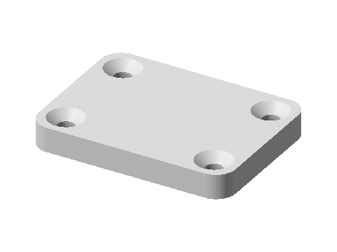

Overview
Drafted with AI, not yet reviewed
keycap edits, previews and exports models for fidget, Matt Keeter’s library for implicit surfaces. A model is a Rhai script. It builds a signed distance field: a function of space that is negative inside the shape, positive outside and zero on its surface. fidget renders such fields directly, so the preview needs no mesh and follows every edit. A mesh is made only to export an STL.
The script is on the left and its preview on the right:
- the preview follows the script as it is typed, and an error is marked on the token that caused it
- completion, ElDoc and
C-c C-dknow every function, every shape and every shape’s fields - a number can be nudged up and down, by keys or with the mouse, while the preview follows
A prelude of shapes, rounded and chamfered combinations, extrusions, arrays and metric fasteners is always loaded. Modules of standard parts and laser-cut joints are imported by name.
keycap and its parts come without warranty of any kind. Check a standard part’s dimensions against the part you have, print or cut a test piece before relying on a fit, and don’t use a printed or cut part where its failing could hurt someone.
keycap was written with Claude Code (Anthropic). It is not affiliated with fidget, libfive or Rhai, nor endorsed by their authors.
Requirements
- Emacs 30.1 or later, with tree-sitter support
rhai-ts-mode, which keycap derives from, and its tree-sitter grammarkeycap-server, the server that evaluates, renders and meshes scripts, built with the package;keycap-server-programnames it- a Vulkan driver for GPU rendering; without one, the CPU renders
Quick start
A file whose name ends in .keycap opens in keycap-mode.
A .rhai file opens in rhai-ts-mode.
For keycap there, use M-x keycap-mode, or a -*- mode: keycap -*- cookie on the first line.
Visit plate.keycap and type a model, such as this one.
A plate with rounded corners and four countersunk M3 holes.
let plate = rect([40, 30], #{round: 4}).extrude([0, 5]); let hole = screw_hole("M3", 10, #{head: "countersunk"}) .move([0, 0, 5]); let holes = hole.grid_array([30, 20], [2, 2], #{center: true}); draw(plate.difference(holes));

Press C-c C-c.
The preview opens beside the script and shows the plate.
Turn it with the arrow keys or by dragging, and zoom with the wheel or + and -.
Change 4 to 6, and the corners follow.
With point on the 30, C-c C-n and C-c C-p step it up and down.
Press C-c C-e to export plate.stl.
C-c C-d on any name shows its documentation, and M-x keycap-guide opens this manual.
The examples are complete models to start from.